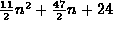
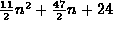
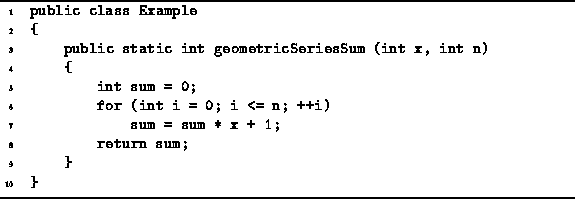
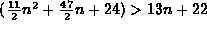

Data Structures and Algorithms
with Object-Oriented Design Patterns in Java
Data Structures and Algorithms
with Object-Oriented Design Patterns in Java
In this example we revisit the problem of computing a
geometric series summation .
We have already seen an algorithm to compute this summation
in Section  (Program ).
This algorithm was shown to take  cycles.
(Program ).
This algorithm was shown to take  cycles.
The problem of computing the geometric series summation
is identical to that of computing the value of a polynomial
in which all of the coefficients are one.
This suggests that we could make use of
Horner's rule
as discussed in Section .
An algorithm to compute a geometric series summation
using Horner's rule is given in Program .

Program: Program to compute  using Horner's rule.
using Horner's rule.
The executable statements in Program
comprise lines 5-8.
Table gives the running times,
as given by the simplified model,
for each of these statements.
| statement | time |
| 5 | 2 |
| 6a | 2 |
| 6b | 3(n+2) |
| 6c | 4(n+1) |
| 7 | 6(n+1) |
| 8 | 2 |
| TOTAL | 13n+22 |
In Programs and
we have seen two different algorithms to compute the same
geometric series summation.
We determined the running time of the former to be
cycles
and of the latter to be 13n+22 cycles.
In particular, note that for all non-negative values of n,
.
Hence, according to our simplified model of the computer,
Program , which uses Horner's rule,
always runs faster than Program !
 Copyright © 1998 by Bruno R. Preiss, P.Eng. All rights reserved.
Copyright © 1998 by Bruno R. Preiss, P.Eng. All rights reserved.